Work Experience
Narrative Nights Inc. (2011/Jul. ~)
CEO / Lead programmer
AR / MR / 3D
Massive 3D security data visualizer
Massive 3D security data visualizer client implementation.
(Nirvana Kai, Daedalus, NICTER Atlas/Cube)
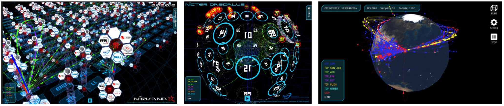
| Client | NICT, The Strippers |
| Platform | WebGL/iOS/Android |
| Environment | Unity, C#, Shader |
AR Music Kit for Google I/O 2016 by Yuri Suzuki
AR development
https://www.androidexperiments.com/experiment/ar-music-kit
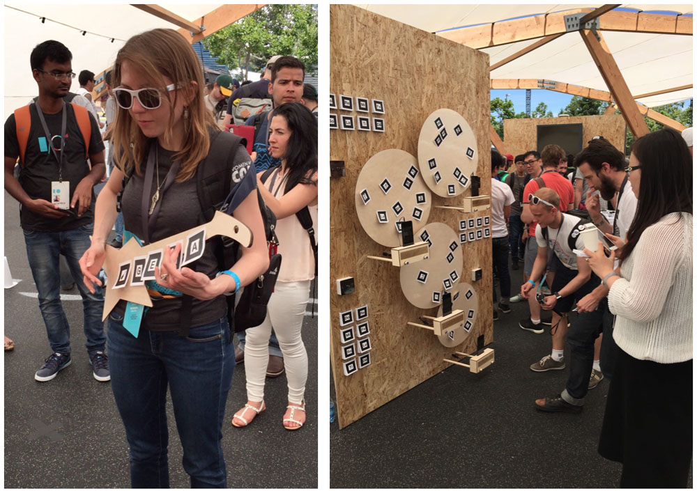
| Client | Yuri Suzuki, Gold Rush Computing |
| Platform | Android |
| Environment | Java, C++, ARToolkit |
Hololens app
Hololens app implementation for the museum and historical sites with the light control.
(Details undisclosed.)
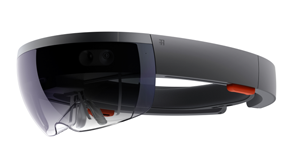
| Client | Undisclosed (Ad agency) |
| Platform | Hololens, Stage lighting |
| Environment | Unity, C#, DMX512 |
AKB48 AR
Real photo AR develpment with hemishpere shooting system.
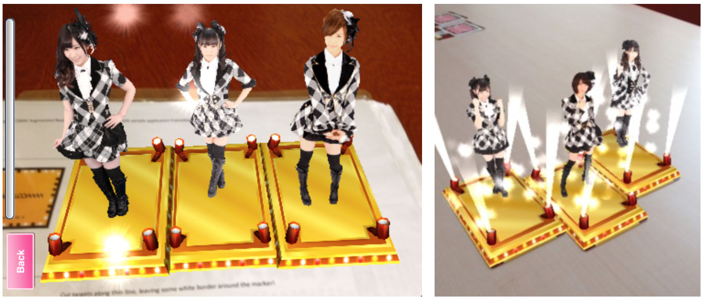
| Client | MTI Ltd. |
| Platform | Android, iOS |
| Environment | C++, Objective-C, Java, Vuforia |
AI / ML
Asychronous learning algorithm implementation
Asynchronous learning algorithm impementation for Post-K (FUGAKU) project.
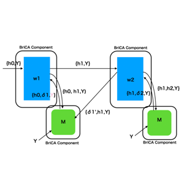
| Client | RIKEN |
| Environment | Python, TensorFlow, BriCA |
Reinforcement Learning implementation
Reinforcement learning demo with CARLA/Uneal Engine
| 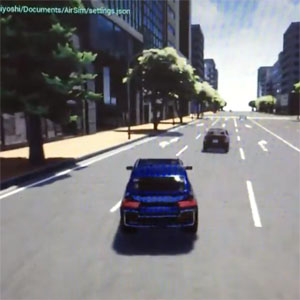 |
| Client | Undisclosed |
| Platform | Linux |
| Environment | UnrealEngine, CARLA, C++, Python, TensorFlow |
fMRI/EEG data analysis
fMRI/EEG simultaneous recording data analysis with deep learning.
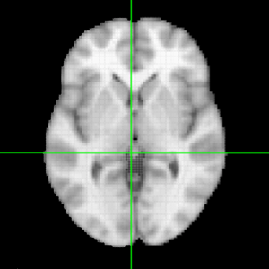
| Client | Kochi University of Technology |
| Environment | Python, PyTorch |
Image Processing / DSP
Picute
GPU filter composition system development

| Client | MTI Ltd. |
| Platform | Android, iOS |
| Environment | Java, C++, Objective-C, GLSL |
Pocket Video
GPU based video editing system development.
DSP implementation.
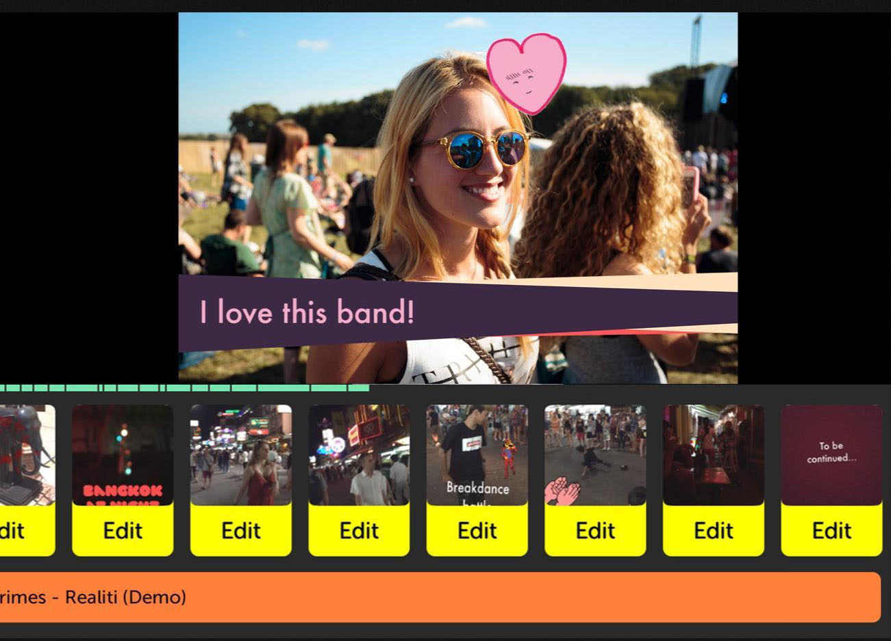
| Client | Pocket Supernova |
| Platform | Android, iOS |
| Environment | Java, C++, Objective-C, GLSL |
Interactive
JOC Official App
London Olympic JOC official social app: Android client development
| Client | JOC, The Strippers |
| Platform | Android |
| Environment | Java |
Miidas HR Science Institute (2020/10. ~ )
AI Programmer
Recommendation system development
| Environment | PyTorch, Catboost, gRPC |
Dwango AI Lab (2018/6. ~ 2019/3.)
Cooperative researcher
Reseach of disentanglement representation
| Partner | NTT Laboratory |
| Environment | Python, PyTorch, TensorFlow |
Reinforcement learning environment development
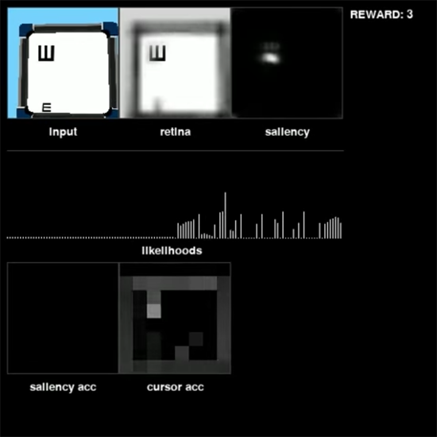
| Environment | Python, OpenGL, OpenCV, React |
Cyber Step Inc. (2005/Aug. ~ 2011/Jun.)
Lead programmer
Cosmic Break
Server side development
Game client/graphics development
P2P Voice chat system devepment
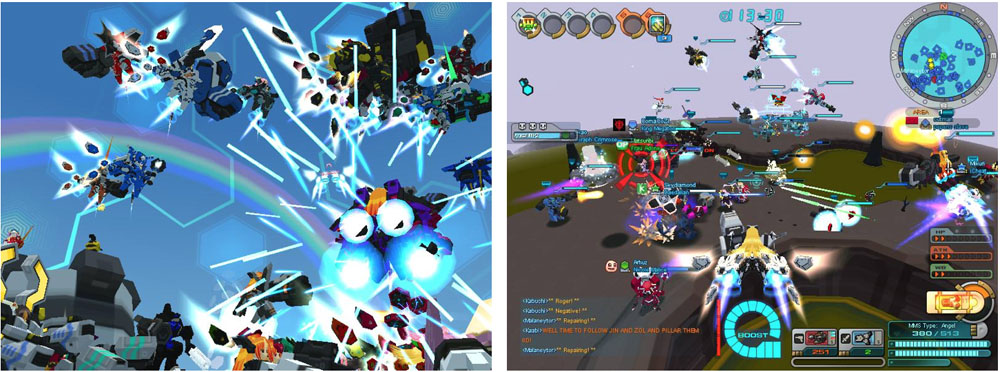
| Platform | Windows, Linux |
| Environment | C++, Java, OpenGL |
GetAmped2
Sound streaming server/client development
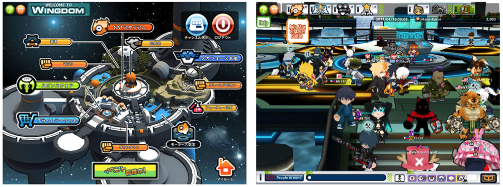
| Platform | Windows, Linux |
| Environment | C++, Java |
Monemone
Server/Client development
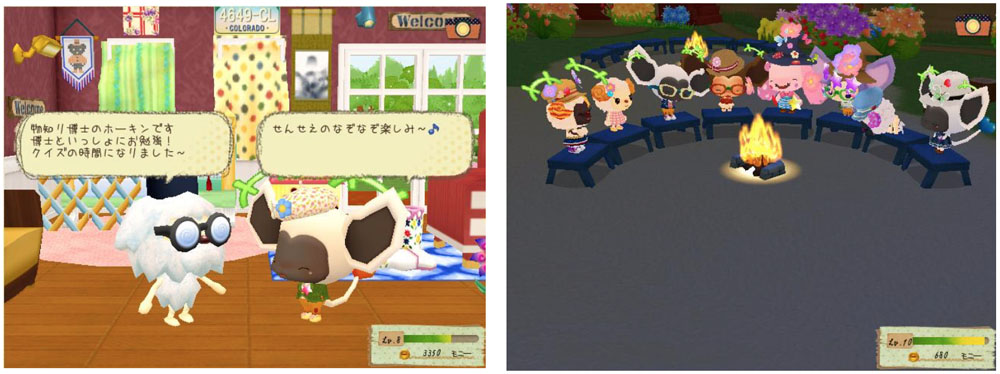
| Platform | Web |
| Environment | Java, PHP, Squirrel |
Sony Computer Entertainment Inc. (2000/Jul. ~ 2004/Dec.)
Game Programmer
ALIFE prototype
Developed genetic programming learning & rigid body simulation system.
| Platform | PlayStation2 |
| Environment | C++, Assembler |
DJ Box
Auto DJ playing system (AI-DJ) and sound visualizer development
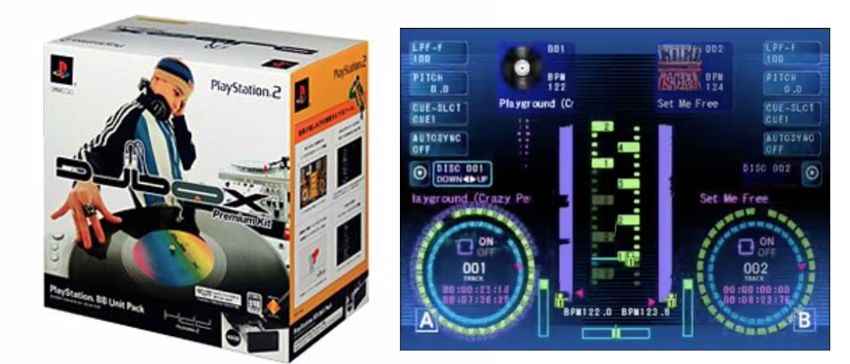
| Platform | PlayStation2, PSX |
| Environment | C++ |
Toro to Kyujitsu
Chatterbot script programming
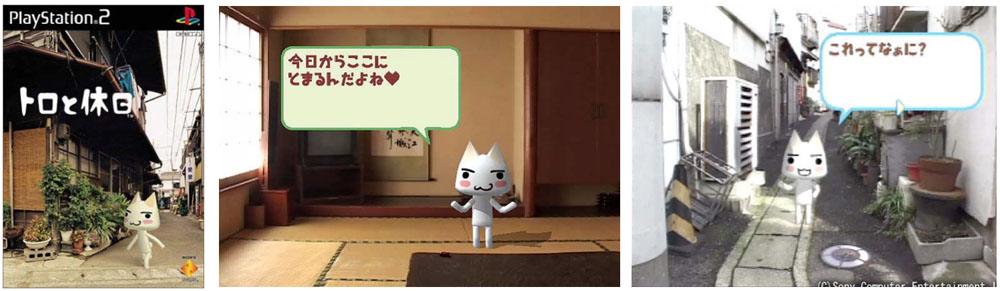
| Platform | PlayStation2 |
| Environment | Original DSL |
Rimococoron
Production tool development
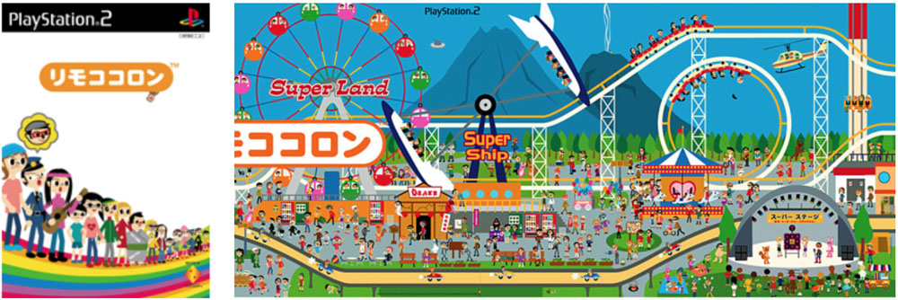
| Platform | PlayStation2 |
| Environment | C++, Java |
Open source projects
UNREAL
Reproducing DeepMind paper “Reinforcement Learning with Unsupervised Auxiliary Tasks” with TensorFlow & DeepMindLab.
https://github.com/miyosuda/unreal
| Environment | Python, TensorFlow |
A3C
Reproducing DeepMind paper “Asynchronous Methods for Deep Reinforcement Learning” with TensorFlow.
https://github.com/miyosuda/async_deep_reinforce
| Environment | Python, TensorFlow |
Rodentia
Customizable 3D learning environment for MacOSX and Linux.
https://github.com/miyosuda/rodentia
| Platform | Linux, MacOSX |
| Environment | C++, OpenGL, GLSL, Python |
SCAN
Reproducing DeepMind paper “SCAN: Learning Abstract Hierarchical Compositional Visual Concepts.”
https://github.com/miyosuda/scan
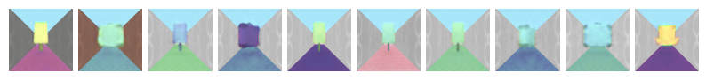
| Environment | Python, TensorFlow |
Disentangled VAE
Reproducing DeepMind paper “Early Visual Concept Learning with Unsupervised Deep Learning.”
https://github.com/miyosuda/disentangled_vae

| Environment | Python, TensorFlow |
Heart rate variability analysis tool
https://github.com/miyosuda/heartrate-monitor
Heart rate variability (HRV) analysis tool to detect autonomic nerve state using auto regressive method.

| Platform | MacOSX, Polar H7/H6 |
| Environment | Swift, Bluetooth LE |
Awards
Animal AI Olympics 2019
Category Prize for internal representation category (inf mnky team)
| Environment | Unity, Python, TensorFlow, Unity-ML Agents |
Education
Bachelor of Liberal Arts (Natural Science, Simulation Physics), International Christian University, Tokyo (1999)
Thesis: “1/f fluctuation on the edge of chaos”
Publications
Masanori Yamada, Kim Heecheol, Kosuke Miyoshi, Tomoharu Iwata, Hiroshi Yamakawa (2020)
Disentangled Representations for Sequence Data using Information Bottleneck Principle
ACML, 2020
Masanori Yamada, Kim Heecheol, Kosuke Miyoshi, Hiroshi Yamakawa (2019)
FAVAE: Sequence Disentanglement using Information Bottleneck Principle
arXiv, 2019
Kosuke Miyoshi, Naoya Arakawa, Hiroshi Yamakawa (2018)
Do top-down predictions of time series lead to sparse disentanglement? P15-16 [Poster]
The 28th Annual Conference of the Japanese Neural Network Society, 2018
Kosuke Miyoshi, Naoya Arakawa, Hiroshi Yamakawa (2018)
Hierarchical Variational Recurrent Autoencoder with Top-Down prediction.
Poster session: Joint symposium of 10th Optogenetics Research Conference and Second International Symposium on Brain Information Dynamics 2018
Kim Heecheol, Masanori Yamada, Kosuke Miyoshi, Hiroshi Yamakawa (2018)
Disentangled Representation Learning From Sequential Data.
The 32nd Annual Conference of the Japanese Society for Artificial Intelligence, 2018